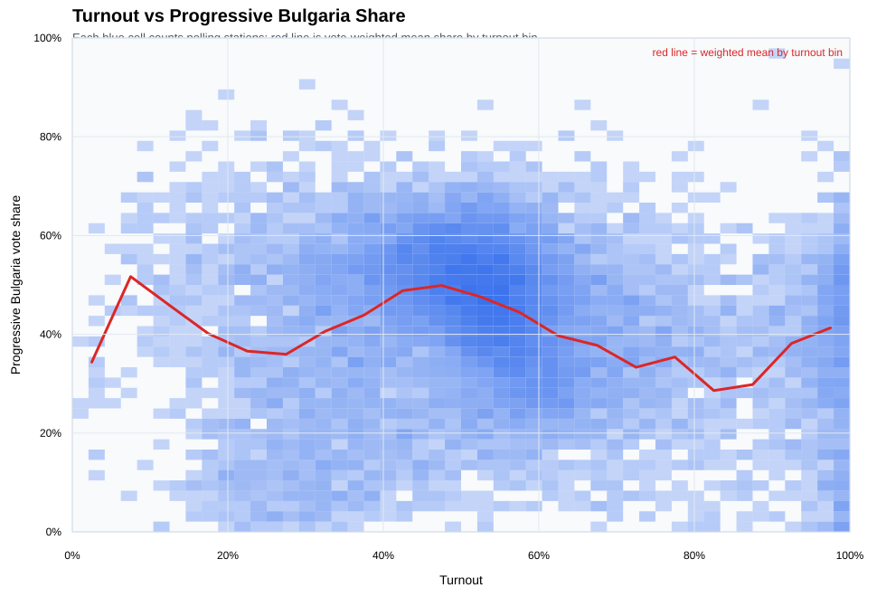
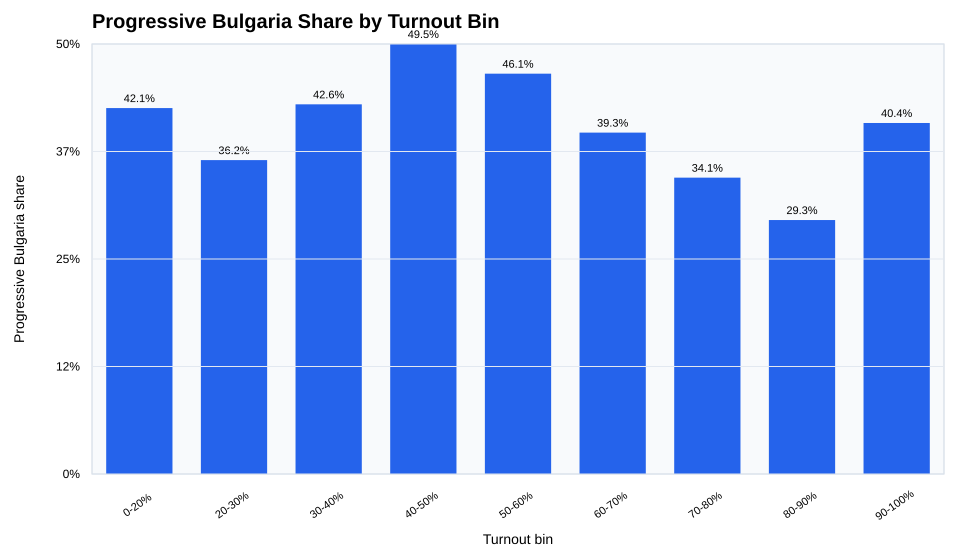
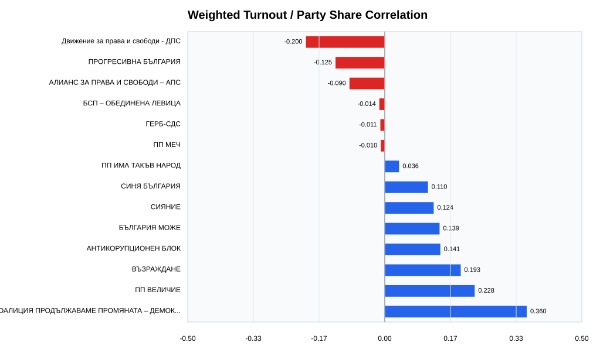
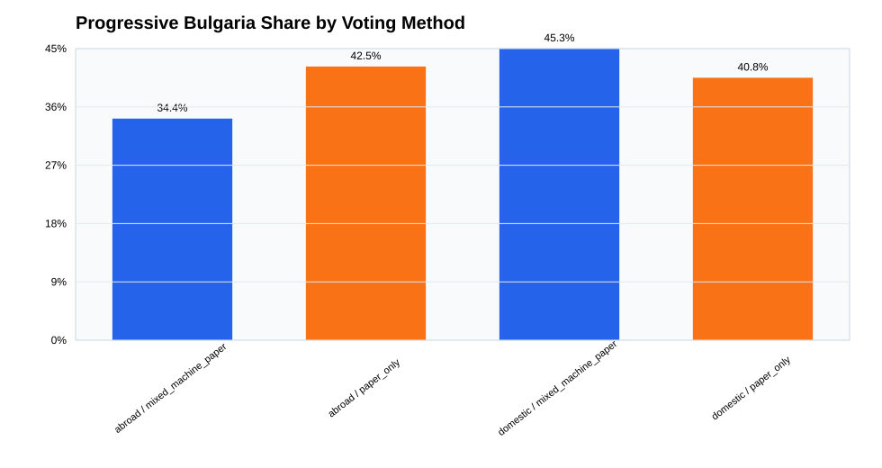
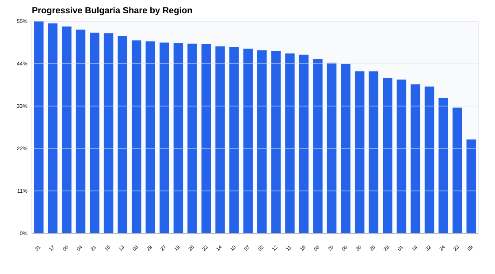
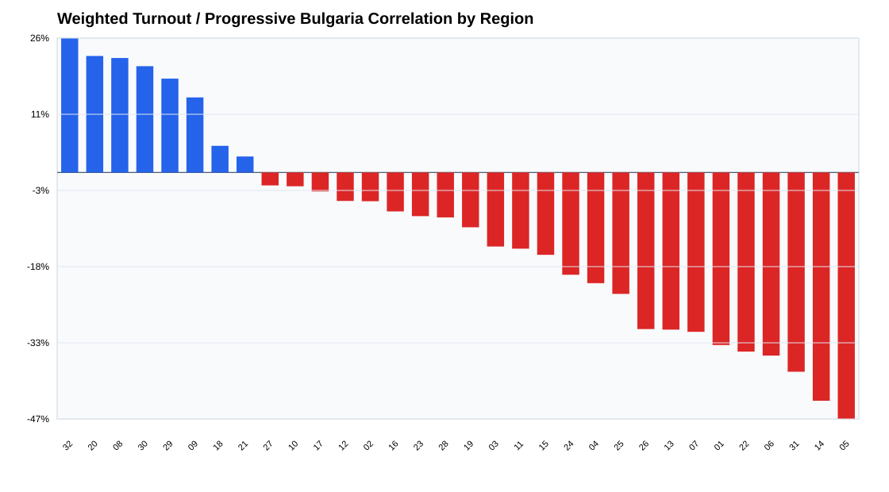
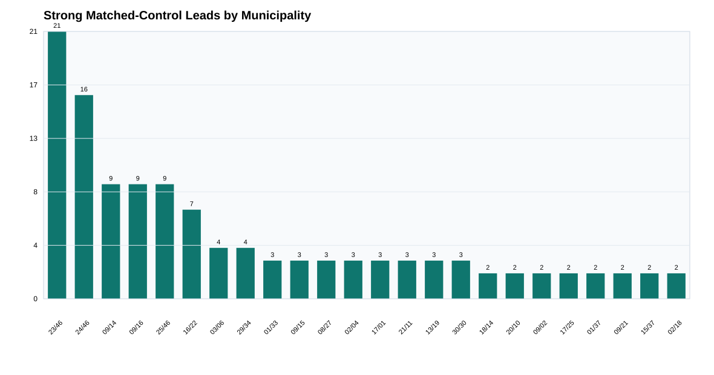
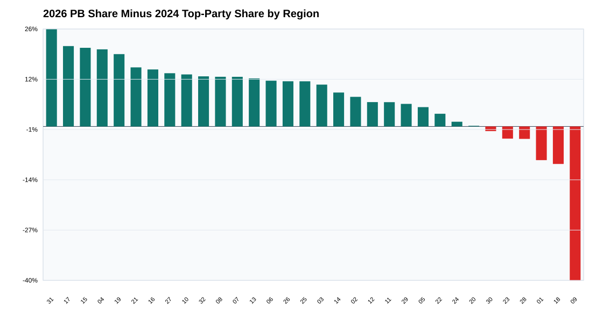
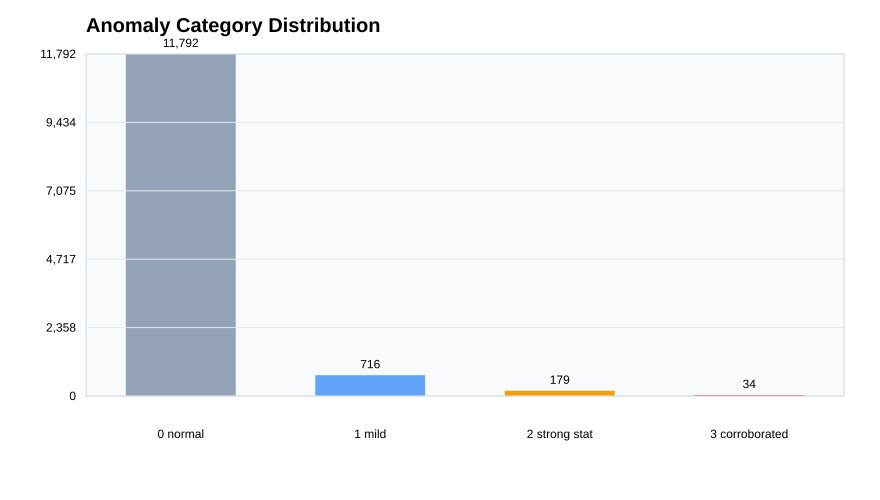
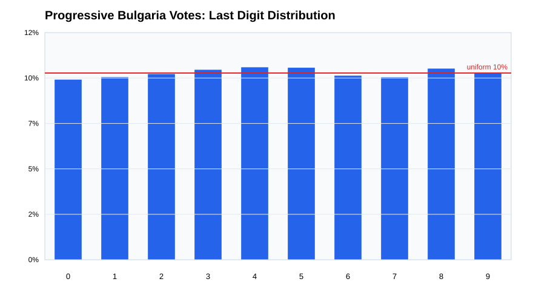

Conclusion
No broad statistical proof of fraud; targeted local review is justified.
The strongest national fraud-style pattern requested by the investigation, high turnout rising together with high Progressive Bulgaria share, is not present nationally. The strongest remaining evidence is local: clusters, matched-control residuals, historical swings, and a small set of protocol/validation flags that justify targeted manual protocol review.
Evidence Supporting No Broad National Statistical Fraud Pattern
Remaining Limitations
Data Validation
Vote-table totals match the regional spreadsheets exactly. The remaining protocol mismatches are retained as review flags but are too small to explain the national result.
National and Party Patterns




Progressive Bulgaria ranks 24 of 25 parties by weighted turnout/share correlation, descending. This is a strong negative check against a simple national ballot-stuffing pattern favoring the winner.
Regional and Local Clusters



Historical Baseline
The historical comparison is based on exact section ID matches only. It is useful for prioritization but not a direct fraud test, because exact section IDs can still hide boundary changes and political realignment can produce real swings.


Anomaly Score
The anomaly score is a triage score. It combines matched-control residuals, regional residuals, coordinate clustering, historical swing, voting method flags, validation issues, and estimated vote impact. It is not a fraud label.
Digit Diagnostics

Data Explorer
Search the priority tables below. Full CSVs are also copied into the site assets.
Downloads
Sources and Reproducibility
Primary sources are the official CIK result/open-data archives for 19 April 2026, the 2026 CIK open-data page, and the official October 2024 archive URL recorded in data/raw/cik_historical/historical_fetch_manifest.json.
Rebuild the current analysis from the repository root with the scripts in src/. Generated data and figures are under outputs/; the static website is under site/.